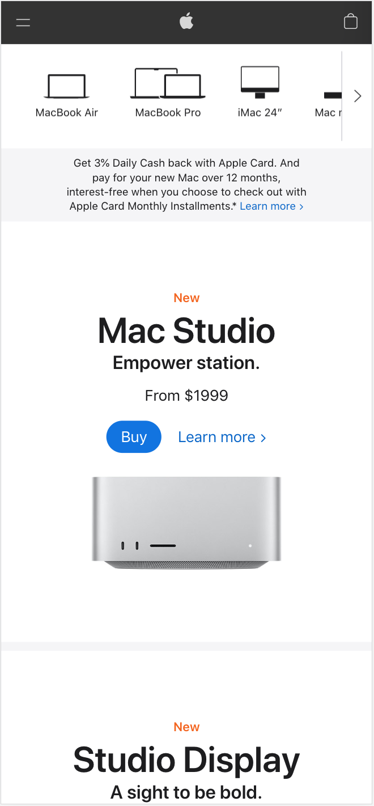
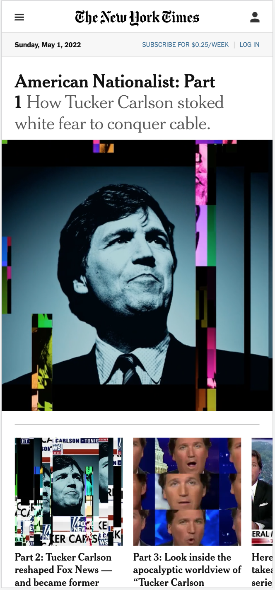

Visual Hierarchy
Asana
asana.com/campaign/fac/think
Asana has arranged the components in ascending or descending order of importance. It clearly shows what the product is, a catchy title and the option to register for the product after a brief explanation.
White Space and Clean Design
Apple
apple.com/mac

Apple uses white space to display information in a very readable way and drives the user's attention to each product with concise information due to the padding that allows having that product in the middle of the screen.
PARC: Alignment
The New York Times
nytimes.com

Alignment in The New York Times helps us see the structure of the web page and connect elements in a powerful way. The design takes us from left to right, top to bottom in a natural way, with the same pattern throughout.